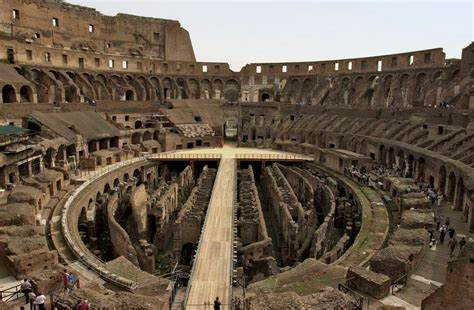

giant amphitheater built in rome under the Flavian emperors. Construction of the Colosseum was begun sometime between 70 and 72 ce during the reign of Vespasian. It is located just east of the Palatine Hill, on the grounds of what was Neros Golden House. The artificial lake that was the centerpiece of that palace complex was drained, and the Colosseum was sited there, a decision that was as much symbolic as it was practical. Vespasian, whose path to the throne had relatively humble beginnings, chose to replace the tyrannical emperors private lake with a public amphitheater that could host tens of thousands of romans.

facts about the colosseum
1. The Colosseum was built between 72 A.D and 80 A.D under the Emperor Vespasian, in the heart of Ancient Rome.
2. Made from stone and concrete, this magnificent monument was built with the man power of tens of thousands of slaves.
3. The Colosseum is the largest amphitheater (meaning “theatre in the round”) in the world! Oval in shape, it measures 189m long, 156m wide and 50m high (about the height of a 12 storey building). This ancient sporting arena could easily fit a modern day football pitch inside!
4. This brilliant building had 80 entrances and could seat approximately 50,000 spectators who would come to watch sporting events and games. These events included gladiatorial combats, wild animal hunts and, believe it or not, ship naval battles
5.Free for all! At the Colosseum’s major events – often those organised and paid for by the emperors themselves – there was no entry fee. And free food was sometimes served, too. Bonus! Emperors would use this as a way to gain popularity and support from the public.